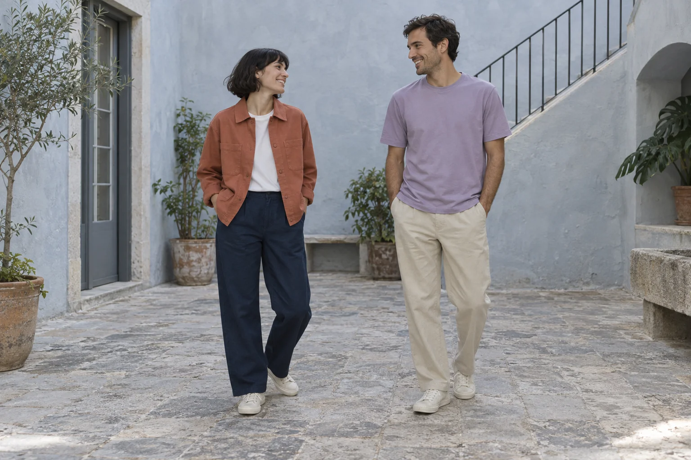

Studio Overshirt
€118.00XS–L · 100% cotton twill · nominal 250gsm
ClayInk
Explore the piece 
The everyday edit
Easy layers for the plans you make and the hours in between. Three pieces, made to belong together.
Meet your everyday editWe are a seven-person label in Lisbon, working in small local runs. Our clothes start with familiar forms: an overshirt, a trouser and a tee. The choices are in the proportion, the texture and the colour you reach for first.
The complete collection
XS–L · 100% cotton twill · nominal 250gsm
XS–L · 100% cotton twill · nominal 230gsm
XS–L · 100% cotton jersey · nominal 180gsm
Start with something you know
A medium tee and a medium overshirt have different room built into them. Lay a favourite piece flat and compare its measurements with ours. It is a more useful conversation than a size name alone.
Compare a garmentYour wardrobe / our dimensions
These are garment widths, not body measurements. Compare the complete size table before deciding.